Cifra care poate fi
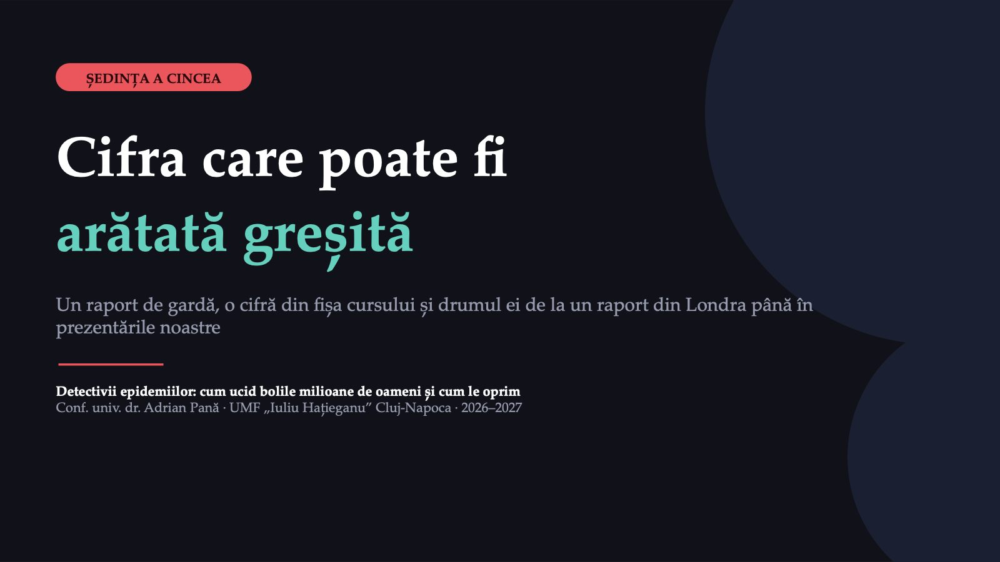
1 / 46Bun venit la a cincea ședință. Azi urmărim o singură cifră, de la raportul din care vine până la diapozitivul unui coleg de la raportul de gardă. Ați întâlnit-o, probabil, de multe ori; o găsiți chiar în fișa acestui curs. La sfârșit veți ști ce fel de cifră este și cum o puteți folosi.
Ce cifră poate fi arătată greșită și de ce ar fi asta un lucru bun?
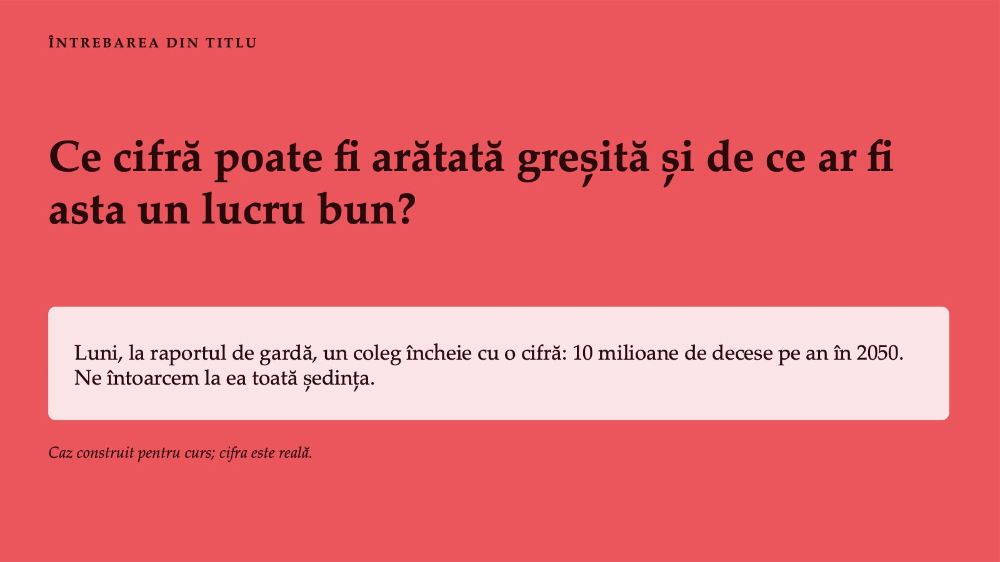
2 / 46Prima întrebare a ședinței este chiar titlul ei: ce cifră poate fi arătată greșită și de ce ar fi asta un lucru bun? Pare o întrebare ciudată. De obicei ne dorim cifre care să nu poată fi arătate greșite. Luni, la raportul de gardă, un coleg încheie prezentarea cu o cifră mare: 10 milioane de decese pe an în 2050. Situația este construită pentru curs, dar cifra este reală și are o istorie pe care o refacem pas cu pas. Ne întoarcem la ea toată ședința, în trei acte: de unde vine, ce au găsit cei care au verificat-o și ce s-a întâmplat cu ea după aceea.
Care dintre ele poate fi verificată?
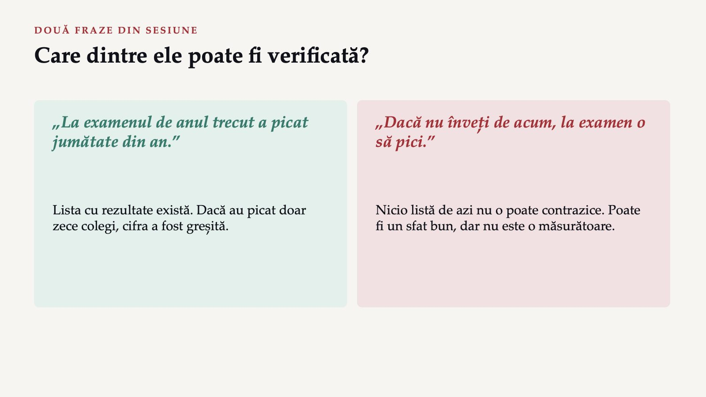
3 / 46Să începem cu două fraze din viața de student, din sesiune. Prima: „La examenul de anul trecut a picat jumătate din an.” O puteți verifica. Lista cu rezultate există, o puteți număra, iar dacă au picat doar zece colegi, cifra a fost greșită. A doua: „Dacă nu înveți de acum, la examen o să pici.” Nicio listă de azi nu o poate contrazice. Poate fi un sfat bun, dar nu este o măsurătoare. Prima frază numără ceva ce s-a întâmplat; a doua spune ce ar urma dintr-o condiție. Țineți minte această deosebire, pentru că pe ea se sprijină toată ședința.
Trei părți, pe care restul ședinței le verifică
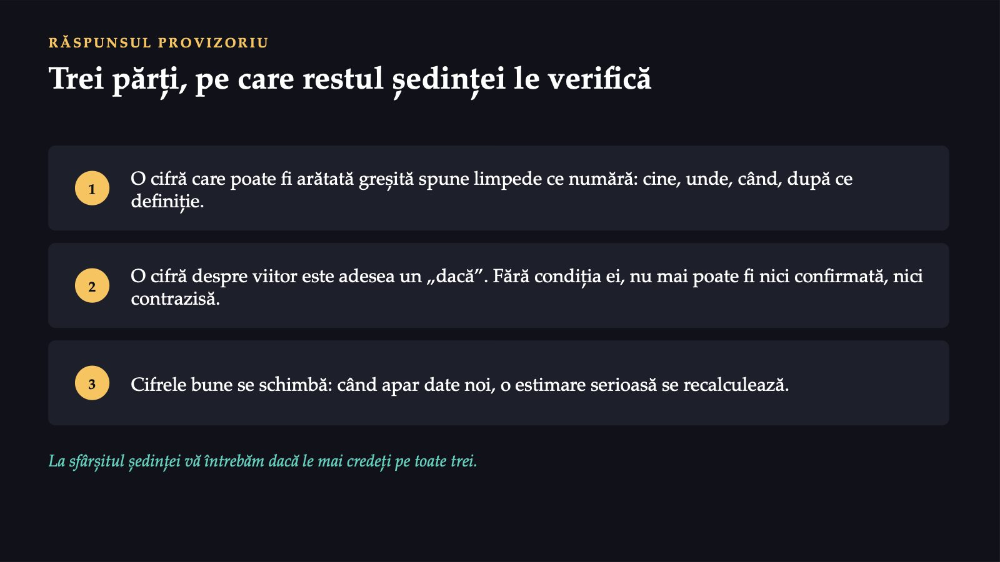
4 / 46Răspunsul provizoriu are trei părți, iar restul ședinței le pune la încercare. Prima: o cifră care poate fi arătată greșită spune limpede ce numără, adică cine, unde, când și după ce definiție. A doua: o cifră despre viitor este, de cele mai multe ori, un „dacă”. Ea este utilă numai împreună cu condiția ei; fără condiție, nu mai poate fi nici confirmată, nici contrazisă. A treia: cifrele bune se schimbă. Când apar date noi, o estimare serioasă se recalculează, iar cea veche se corectează. Asta nu este o rușine pentru știință, ci felul ei de a lucra. Țineți minte cele trei părți: spre sfârșitul ședinței vă vom întreba dacă le mai credeți.
Raportul de gardă de luni dimineață
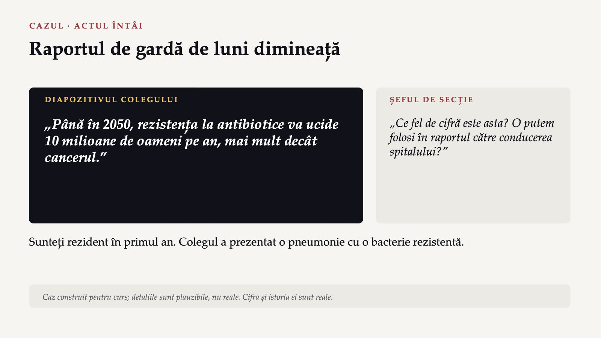
5 / 46Intrăm în primul act al cazului. Situația este construită pentru curs; cifra și istoria ei sunt reale. Sunteți rezident în primul an. La raportul de gardă de luni, un coleg prezintă o pneumonie cu o bacterie rezistentă și încheie cu diapozitivul: până în 2050, rezistența la antibiotice va ucide 10 milioane de oameni pe an, mai mult decât cancerul. Șeful de secție se întoarce spre voi cu două întrebări: ce fel de cifră este asta și o putem folosi în raportul către conducerea spitalului? Gândiți-vă cum ați răspunde chiar acum. Ca să răspundem bine, căutăm mai întâi de unde vine cifra.
„10 milioane proiectat 2050 (O'Neill Report)”
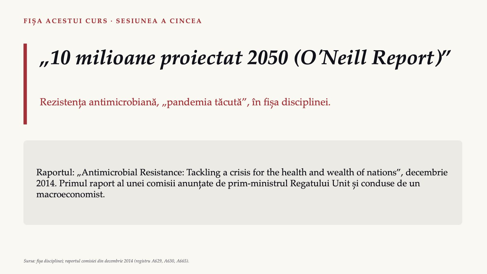
6 / 46Cifra cu care începem nu vine din presă. Este în fișa acestui curs: la sesiunea a cincea, fișa disciplinei scrie despre rezistența antimicrobiană că este „pandemia tăcută” și dă cifra „10 milioane proiectat 2050”. Ați citit-o, probabil, și în alte locuri: în articole, în prezentări, în campanii despre antibiotice. Raportul din care vine a apărut în decembrie 2014. Este primul raport al unei comisii de analiză a rezistenței antimicrobiene, anunțată de prim-ministrul Regatului Unit și condusă de un macroeconomist; în fișă, raportul apare după numele acestuia. Trei cercetători au scris în 2016 că cifra a devenit un refren, citat adesea fără precauțiile și fără intervalele care ar fi trebuit să o însoțească.
Pe același desen, un viitor posibil și un prezent
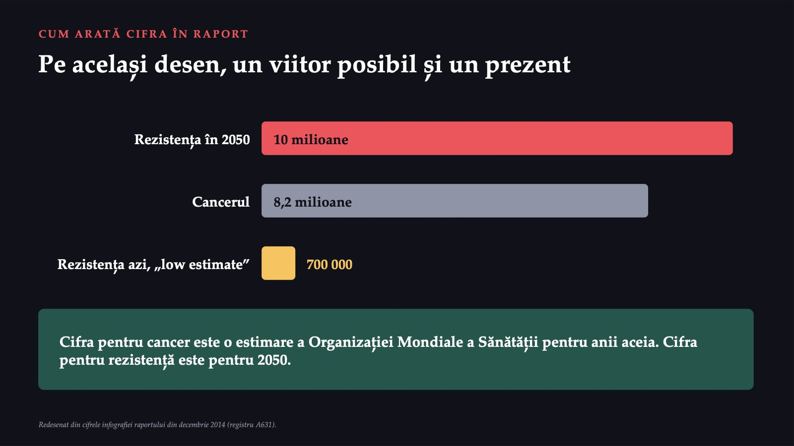
7 / 46Așa arată cifra în raport: o infografie. Titlul ei vorbește de decesele atribuite rezistenței antimicrobiene în fiecare an, comparate cu alte cauze majore de deces. În mijloc, cu litere mari, 10 milioane în 2050. Alături, pentru comparație, cancerul, cu 8,2 milioane, iar jos, mai mic, rezistența de azi, cu 700 000 de decese și mențiunea „estimare minimă”. Priviți bine această comparație. Cifra pentru cancer este o estimare a Organizației Mondiale a Sănătății pentru anii aceia. Cifra pentru rezistență este pentru 2050. Pe același desen stau un număr despre prezent și unul despre un viitor posibil, iar ochiul le compară ca și cum ar fi de același fel.
Ce fel de cifră este „10 milioane de decese pe an în 2050”?
![MENTIMETER · ANONIM PRIMA DECIZIE · VOTUL ÎNTÂI Ce fel de cifră este „10 milioane de decese pe an în 2050”? A Un număr de decese deja numărate, adunat din registre B Prelungirea în viitor a tendinței observate în ultimii ani C Rezultatul unui scenariu: ce s-ar întâmpla dacă rezistența ar crește într-un anumit fel D O prognoză a viitorului celui mai probabil, cu un interval de incertitudine Votați pe menti.com; linkul e și în chat. Fără discuție. Apoi, în chat, o frază: convingeți-i pe cei care au votat altfel. menti.com anonim, fără cont](diapozitive/C05/008.jpg) 8 / 46
8 / 46Prima decizie, în doi timpi. Votați fiecare pe Mentimeter, anonim și fără discuție; linkul e și în chat. Ce fel de cifră este „10 milioane de decese pe an în 2050”? Patru variante: o numărătoare din registre, o tendință prelungită, rezultatul unui scenariu sau o prognoză a viitorului celui mai probabil. Apoi scrieți în chat un argument pentru varianta voastră.
Ce fel de cifră este „10 milioane de decese pe an în 2050”?
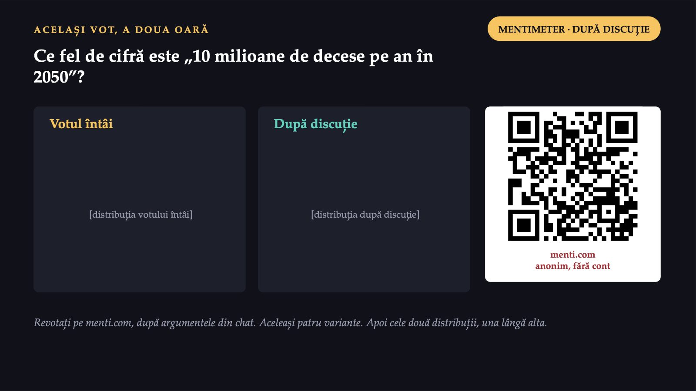
9 / 46Același vot, a doua oară, după argumentele din chat. Variantele sunt aceleași patru. Apoi privim cele două distribuții una lângă alta: cea de dinainte și cea de după discuție. Diferența dintre ele ne spune cât au contat argumentele citite în chat.
Răspunsul apare după ședință
Răspunsul apare după ședință
Răspunsul apare după ședință
Răspunsul apare după ședință
Răspunsul apare după ședință
Răspunsul apare după ședință
Nu numai bacterii
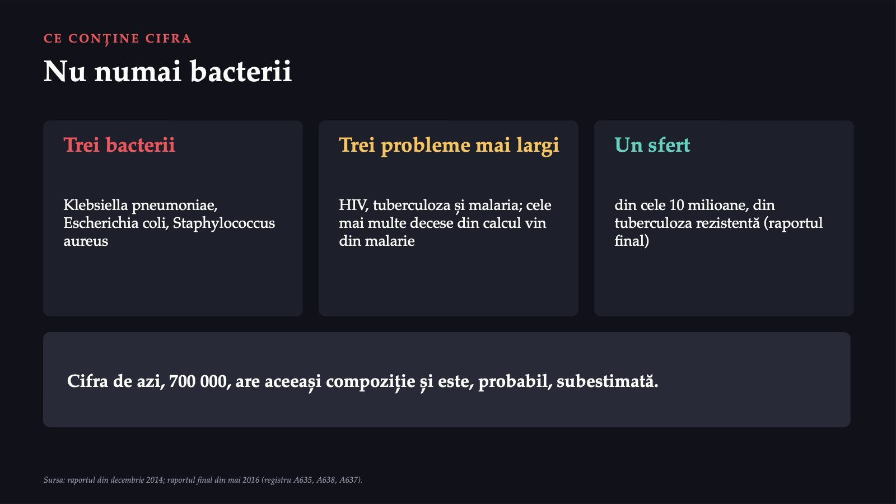
13 / 46Mai este un lucru pe care infografia nu îl arată: cifra de 10 milioane nu privește numai bacteriile. Raportul din 2014 a calculat efectul rezistenței pentru trei bacterii, Klebsiella pneumoniae, Escherichia coli și Staphylococcus aureus, și pentru trei probleme mai largi de sănătate publică: infecția cu virusul imunodeficienței umane (HIV), tuberculoza și malaria. Dintre toate, rezistența în malarie produce cele mai multe decese în calculele lor. În raportul final, comisia adaugă că aproximativ un sfert din cele 10 milioane de decese posibile în 2050 ar veni din tuberculoza rezistentă. Cifra de azi, cea de 700 000, are aceeași compoziție și este, probabil, subestimată. Când un medic spune „rezistența la antibiotice”, se gândește la bacterii. Vom vedea în actul al doilea de ce această diferență face imposibilă o comparație simplă.
Cifra sub lupă
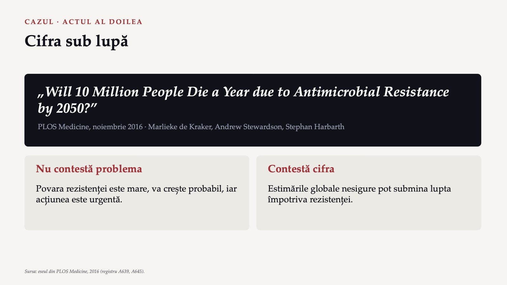
14 / 46Începe actul al doilea. Șeful de secție vă cere să verificați cifra înainte de raport. Trei cercetători au făcut deja acest drum. În noiembrie 2016, revista PLOS Medicine a publicat eseul lui Marlieke de Kraker, Andrew Stewardson și Stephan Harbarth, cu un titlu care este chiar o întrebare: vor muri 10 milioane de oameni pe an din cauza rezistenței antimicrobiene până în 2050? Autorii spun de la început că rezistența are o povară clinică și de sănătate publică mare, că povara va crește probabil și că este nevoie de acțiune urgentă. Nu contestă problema. Contestă cifra: estimările globale nesigure pot submina lupta împotriva rezistenței, în loc să o sprijine.
Cinci pași, fiecare cu întrebarea lui
 15 / 46
15 / 46Ca să judece cifra, cei trei refac drumul calculului, pas cu pas; urmăresc estimările KPMG, pentru că din ele vine fraza citată cel mai des. Fiecare pas are întrebarea lui și adaugă o presupunere. Câte infecții? Datele vin din spitale, mai ales universitare, iar rata lor a fost aplicată întregii țări. Câte sunt rezistente? Proporția depinde de cât de des se recoltează hemoculturi: dacă se recoltează numai de la bolnavii foarte gravi, bacteriile rezistente apar mai des decât sunt în realitate. Câte infecții sunt în afara sângelui? Aici intră raporturi din două studii mici. Câți mor din cauza rezistenței? Studiile dădeau mai ales mortalitatea brută. Ce urmează până în 2050? Scenarii pe care, scriu autorii, nicio dată empirică nu le susține.
12
 16 / 46
16 / 46Să privim de aproape pasul al treilea. Rețeaua europeană de supraveghere înregistrează numai infecțiile din sânge. Pentru pneumonii, infecții urinare și infecții ale plăgilor operatorii, raportul comisiei a preluat raporturi calculate de Centrul European de Prevenire și Control al Bolilor (ECDC). Acesta le calculase din două studii mici: unul din Brooklyn, cu 12 infecții ale sângelui cu Klebsiella, și unul dintr-un singur spital din Spania, cu 4 infecții ale sângelui cu stafilococ rezistent la meticilină. Și un lucru care nu ține de calcul, ci de verificare: niciuna dintre aceste estimări nu fusese publicată într-o revistă cu evaluare colegială, iar intervalele de încredere și analizele de sensibilitate lipseau.
Deaths attributable to AMR every year compared to other major causes of death
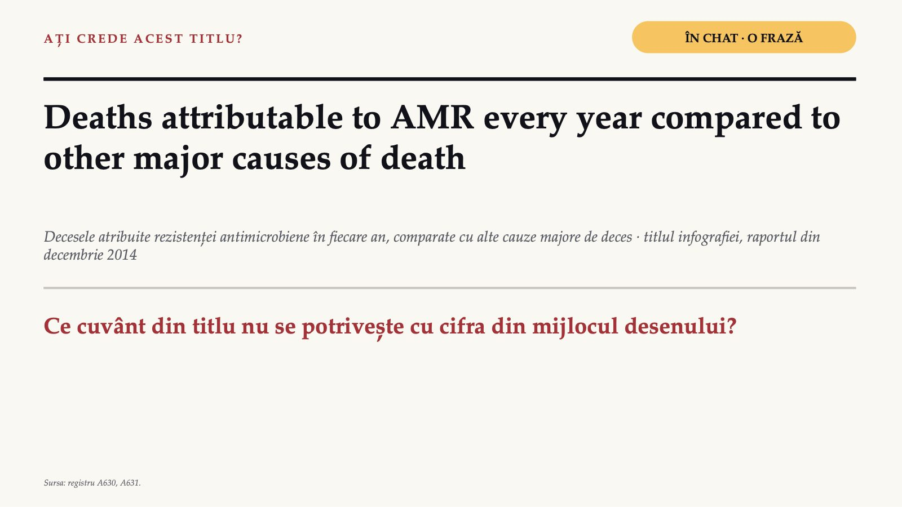
17 / 46Ați crede acest titlu? Este chiar titlul infografiei din raportul din 2014: decesele atribuite rezistenței antimicrobiene în fiecare an, comparate cu alte cauze majore de deces. Scrieți în chat: ce cuvânt din titlu nu se potrivește cu cifra din mijlocul desenului? Gândiți-vă la ce ați aflat până acum despre felul în care a fost calculată cifra.
L-ați crede?
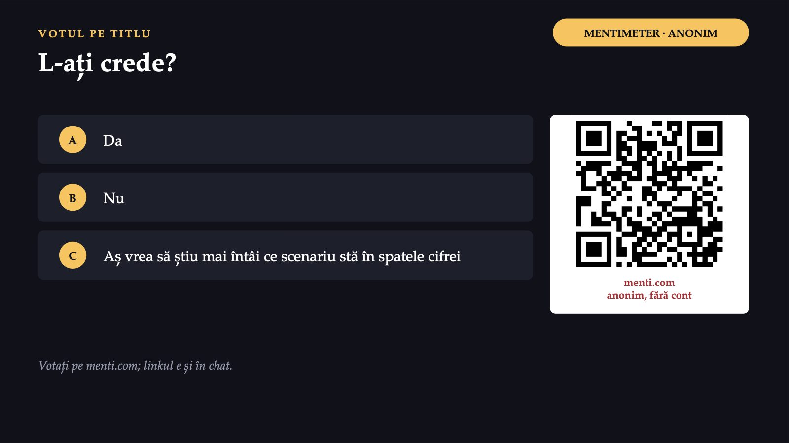
18 / 46Acum votul, pe Mentimeter, anonim: ați crede acest titlu? Trei variante: da; nu; aș vrea să știu mai întâi ce scenariu stă în spatele cifrei. Votul ne arată cum citim un titlu după ce am văzut drumul cifrei.
Conferința de morbiditate și mortalitate, pe o cifră
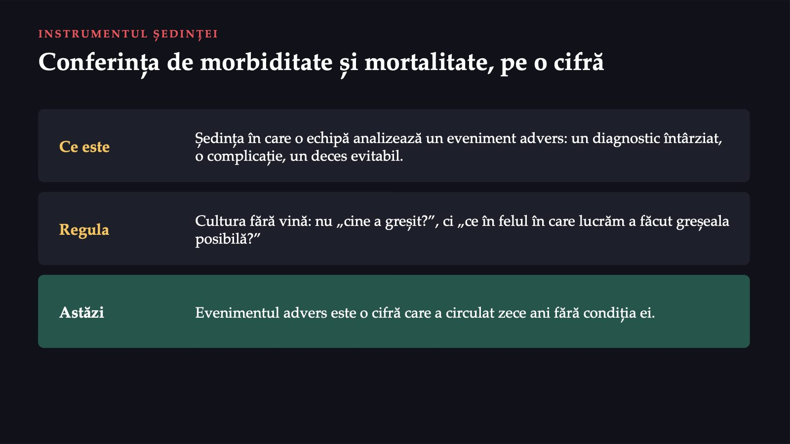
19 / 46Instrumentul acestei ședințe vine din spital: conferința de morbiditate și mortalitate. Este ședința în care o echipă analizează un eveniment advers: un diagnostic întârziat, o complicație, un deces care poate nu trebuia să se întâmple. Regula ei de bază este cultura fără vină. Se caută decizii și condiții, nu un om de arătat cu degetul; întrebarea nu este „cine a greșit?”, ci „ce în felul în care lucrăm a făcut greșeala posibilă și ce schimbăm?”. Astăzi folosim același tipar pentru o cifră. Evenimentul advers este o cifră care a circulat zece ani fără condiția ei. Nu căutăm un vinovat: comisia a spus deschis că estimarea e făcută cu pensula lată, iar cercetătorii au cerut deschis date mai bune. Ne interesează unde a cedat lanțul.
Drumul cifrei, pas cu pas
 20 / 46
20 / 46Prima etapă a conferinței este cronologia. În 2009, Centrul European de Prevenire și Control al Bolilor publică primele estimări internaționale ale poverii rezistenței, numai pentru prezent. În decembrie 2014, primul raport al comisiei: 700 000 de decese pe an azi, ca estimare minimă, și 10 milioane pe an în 2050, într-o infografie alături de cancer; în text, cifra este numită o estimare făcută cu pensula lată, din scenarii. În mai 2016, raportul final repetă cifrele, pe baza unor scenarii. În noiembrie 2016, eseul din PLOS Medicine reface pașii calculului și cere estimări cu marje de incertitudine, analize de sensibilitate și o supraveghere care să acopere toată populația. În 2022 apare primul studiu global, cu aceeași metodă pentru toate țările, pentru anul 2019. Urmăriți unde rămâne condiția cifrei și unde dispare.
De ce a circulat cifra fără condiția ei?
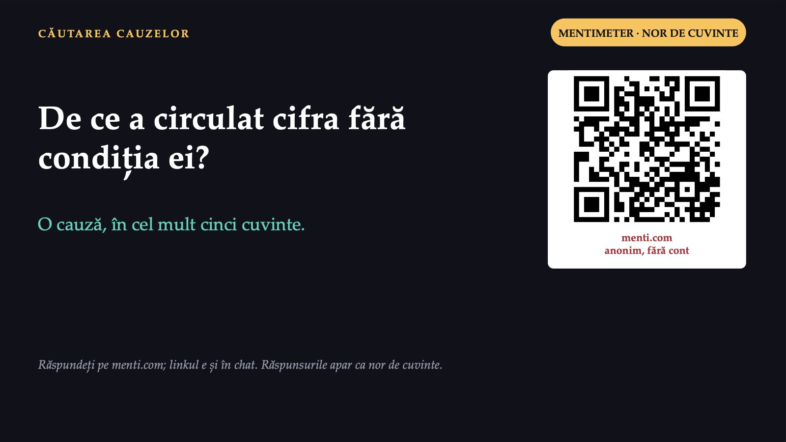
21 / 46Acum căutăm cauzele. Fiecare dintre voi scrie, pe Mentimeter, o singură cauză, în cel mult cinci cuvinte: de ce a circulat cifra fără condiția ei? Gândiți-vă la tot drumul pe care l-am urmărit, de la datele din spitale până la desenul din raport. Răspunsurile apar împreună, ca nor de cuvinte.
Pe ce ramură stă fiecare cauză?
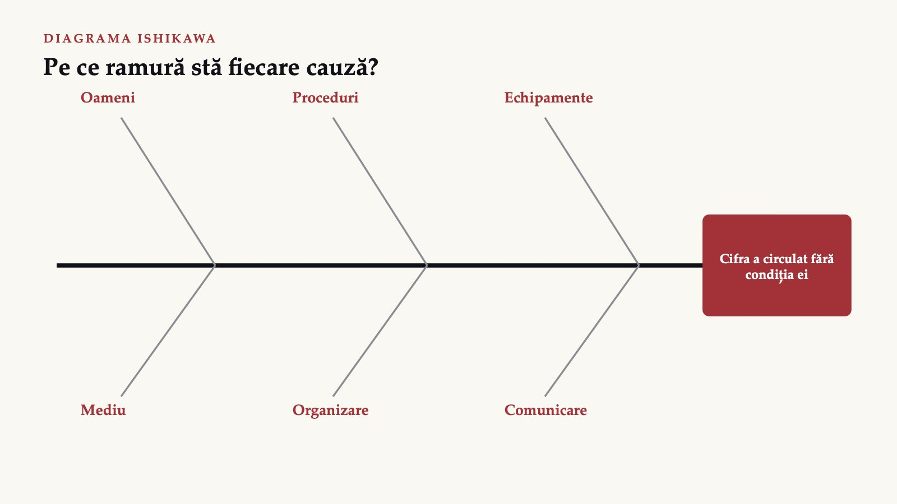
22 / 46Diagrama Ishikawa este desenul în formă de os de pește pe care se așază cauzele unui eveniment. Evenimentul: cifra a circulat fără condiția ei. Cauzele stau pe șase ramuri: oameni, proceduri, echipamente, mediu, organizare, comunicare. Așezăm împreună cauzele din nor, fiecare pe ramura ei; fiecare trebuie să aibă în spate o sursă, nu o impresie.
O singură cauză, aleasă de voi
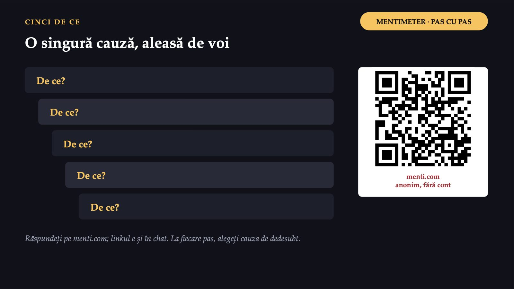
23 / 46Alegem o singură cauză de pe diagramă și întrebăm de cinci ori „de ce?”, pas cu pas. La fiecare pas votați, pe Mentimeter, cauza de dedesubt. Scopul nu este un vinovat, ci condiția din sistem care a făcut posibil restul lanțului.
Răspunsul apare după ședință
Răspunsul apare după ședință
Mai precis decât „mai multă atenție”
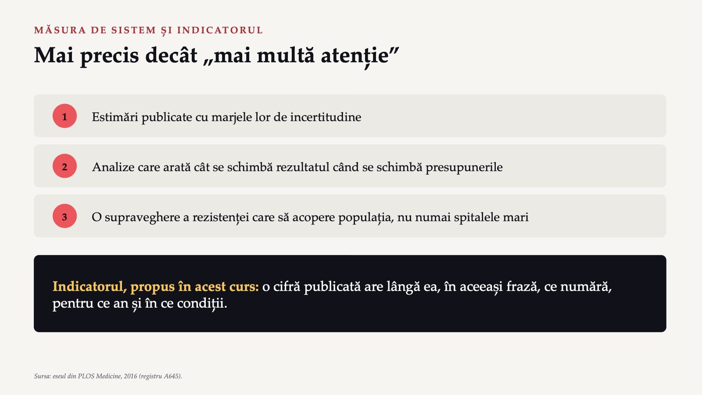
25 / 46Ultima etapă a conferinței este măsura de sistem. Ea este cerută chiar în eseul din 2016 și este mai precisă decât un îndemn la „mai multă atenție”: estimări publicate cu marjele lor de incertitudine, analize care arată cât de mult se schimbă rezultatul când se schimbă presupunerile și, ca temelie, o supraveghere a rezistenței care să acopere populația, nu numai spitalele mari. Cum am ști dacă măsura a funcționat? Avem nevoie de un indicator. Cel propus în acest curs este simplu: o cifră publicată are lângă ea, în aceeași frază, ce numără, pentru ce an și în ce condiții. Îl puteți aplica oricărui raport, de mâine. Urmează o cifră nouă.
4,95 milioane
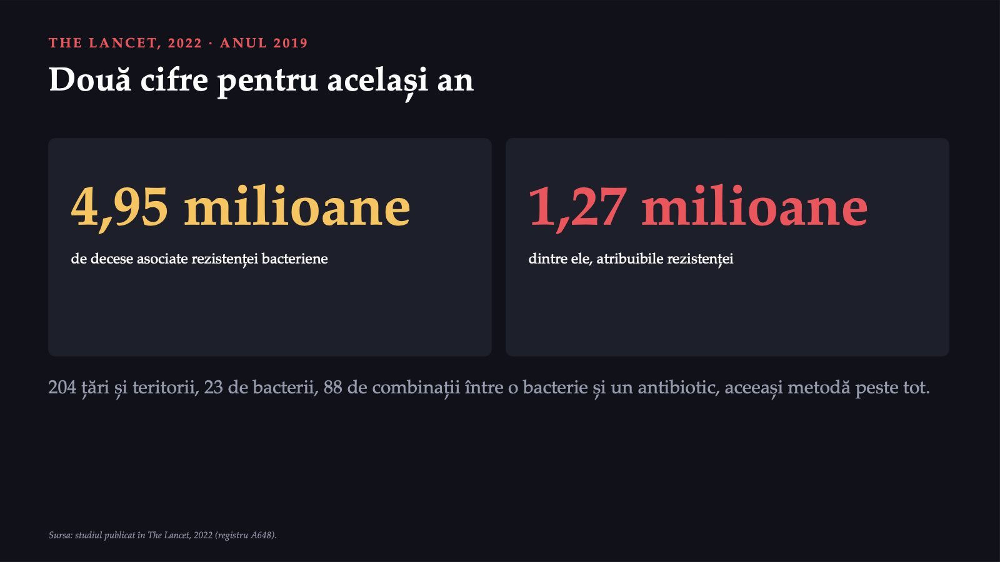
26 / 46În 2022, revista The Lancet publică primul studiu care estimează, pentru 204 țări și teritorii, 23 de bacterii și 88 de combinații între o bacterie și un antibiotic, câte decese a produs rezistența bacteriilor într-un singur an, 2019, cu aceeași metodă pentru toate țările. Rezultatul: 4,95 milioane de decese asociate rezistenței bacteriene, dintre care 1,27 milioane atribuibile ei. Observați că studiul numără numai bacteriile și se referă la un an trecut. De ce două cifre? Pentru că se pot pune două întrebări diferite despre același bolnav. Le despărțim pe diapozitivul următor, cu al doilea termen nou.
Decesul atribuibil și decesul asociat
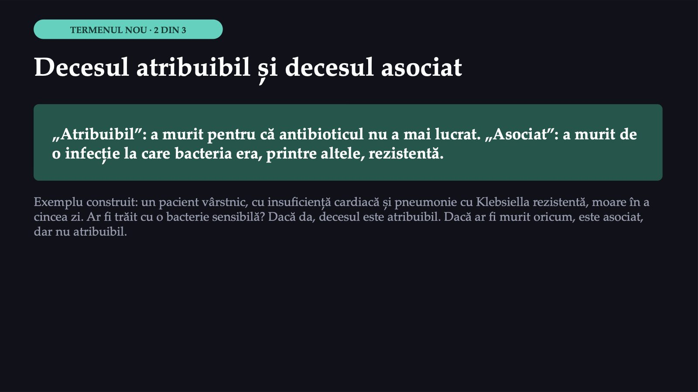
27 / 46Al doilea termen nou: decesul atribuibil și decesul asociat rezistenței. Decesul atribuibil răspunde la întrebarea: câți bolnavi ar fi trăit dacă bacteria lor ar fi fost sensibilă la antibiotice? Decesul asociat răspunde la altă întrebare: câți bolnavi cu o infecție cu bacterie rezistentă au murit și n-ar fi murit dacă nu ar fi avut deloc infecția? A doua cifră o cuprinde pe prima și este mai mare. Exemplul de pe diapozitiv, construit: un pacient vârstnic, cu insuficiență cardiacă și pneumonie cu Klebsiella rezistentă, moare în a cincea zi. Dacă ar fi trăit cu o bacterie sensibilă, decesul este atribuibil rezistenței. Dacă ar fi murit oricum, este asociat ei, dar nu atribuibil. Amândouă cifrele sunt utile: prima arată cât am câștiga dacă antibioticele ar lucra din nou, a doua cât am câștiga dacă infecțiile cu bacterii rezistente nu s-ar mai produce.
2019: 1,27 milioane atribuibile, 4,95 asociate. Arată asta că „10 milioane în 2050” a fost greșit?
![MENTIMETER · ANONIM A DOUA DECIZIE · VOTUL ÎNTÂI 2019: 1,27 milioane atribuibile, 4,95 asociate. Arată asta că „10 milioane în 2050” a fost greșit? A Da: 1,27 milioane este de opt ori mai puțin decât 10 milioane B Nu: 700 000 era prea mic, deci și 10 milioane e prea mic C Nu se poate spune: cele două cifre nu numără același lucru D Da: 4,95 milioane azi înseamnă că 10 milioane vor fi depășite înainte de 2050 Votați pe menti.com; linkul e și în chat. Fără discuție. Apoi, în chat, o frază: convingeți-i pe cei care au votat altfel. menti.com anonim, fără cont](diapozitive/C05/028.jpg) 28 / 46
28 / 46A doua decizie, tot în doi timpi. Studiul din 2022 a găsit, pentru 2019, 1,27 milioane de decese atribuibile și 4,95 milioane asociate rezistenței bacteriene. Votați fiecare pe Mentimeter, anonim și fără discuție: arată el că cifra de 10 milioane pentru 2050 a fost greșită? Apoi scrieți în chat un argument pentru varianta voastră.
Arată studiul din 2022 că „10 milioane în 2050” a fost greșit?
29 / 46Același vot, a doua oară, după argumentele din chat. Variantele sunt aceleași patru. Apoi privim cele două distribuții una lângă alta. Gândiți-vă, înainte de a vota, ce numără fiecare dintre cele două cifre puse față în față.
Răspunsul apare după ședință
Răspunsul apare după ședință
Zece minute
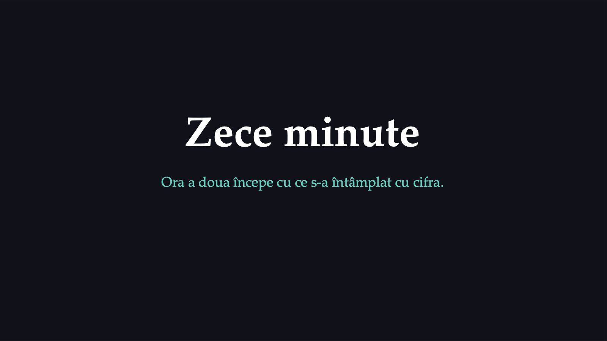
31 / 46Aici se încheie prima oră. Ora a doua începe cu ce s-a întâmplat cu cifra după 2016: o estimare nouă, din 2024, și o întrebare pe care v-o poate pune oricând un pacient. Până atunci, gândiți-vă ce i-ați spune acum șefului de secție.
Răspunsul apare după ședință
Răspunsul apare după ședință
Răspunsul apare după ședință
Răspunsul apare după ședință
Răspunsul apare după ședință
Răspunsul apare după ședință
Răspunsul apare după ședință
Răspunsul apare după ședință
Răspunsul apare după ședință
Răspunsul apare după ședință
Cifra verificabilă
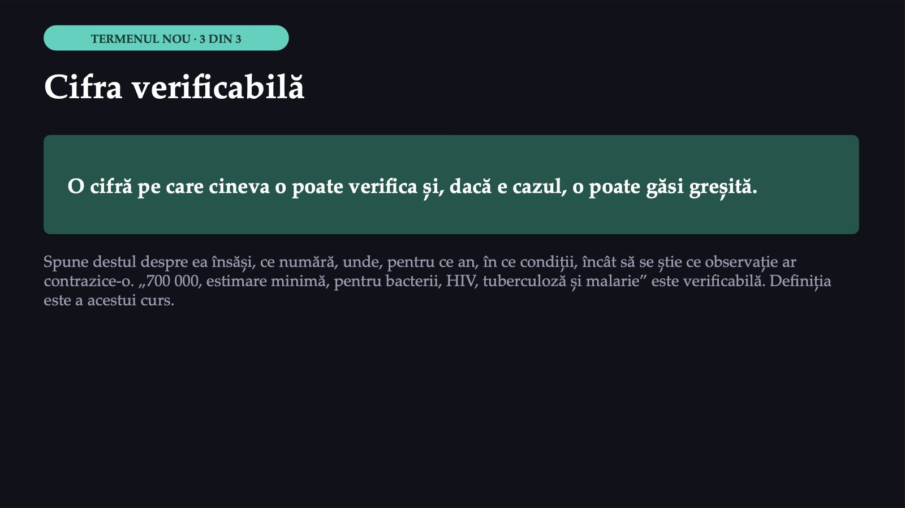
37 / 46Al treilea termen nou, cu definiția folosită în acest curs, nu un termen consacrat al epidemiologiei: cifra verificabilă. Este o cifră care spune destul despre ea însăși, adică ce numără, unde, pentru ce an și în ce condiții, încât să se poată ști ce observație ar contrazice-o. Cifra „700 000 de decese pe an, estimare minimă, pentru bacterii, HIV, tuberculoză și malarie” este verificabilă: știm ce numără și o putem pune alături de o măsurare mai bună. Cifra „10 milioane pe an în 2050”, fără condiție, nu este. Aceeași cifră, cu condiția ei, devine verificabilă în alt sens: putem verifica, an de an, dacă rezistența crește așa cum presupune scenariul. Dacă nu crește, știm că scenariul nu se aplică, fără să așteptăm până la mijlocul secolului.
Titlul de marți
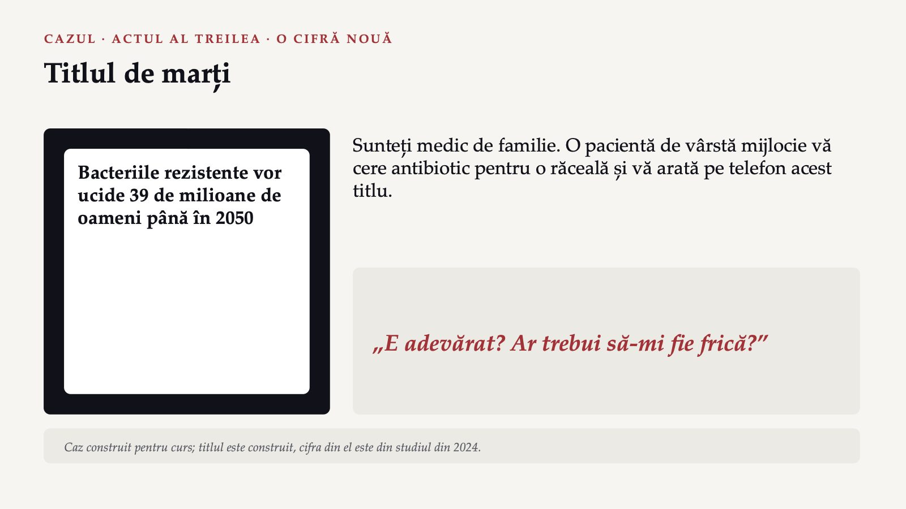
38 / 46Actul al treilea continuă cu o situație nouă, construită pentru curs; titlul este construit, dar cifra din el vine din studiul din 2024. Sunteți medic de familie. O pacientă de vârstă mijlocie vă cere antibiotic pentru o răceală și vă arată pe telefon un titlu: bacteriile rezistente vor ucide 39 de milioane de oameni până în 2050. Vă întreabă dacă e adevărat și dacă ar trebui să-i fie frică. Acum voi sunteți cei care trebuie să citească o cifră înainte de a o folosi, în câteva propoziții, în cabinet. Ce întrebare îi puneți întâi cifrei?
Care este prima întrebare pe care o puneți acestei cifre?
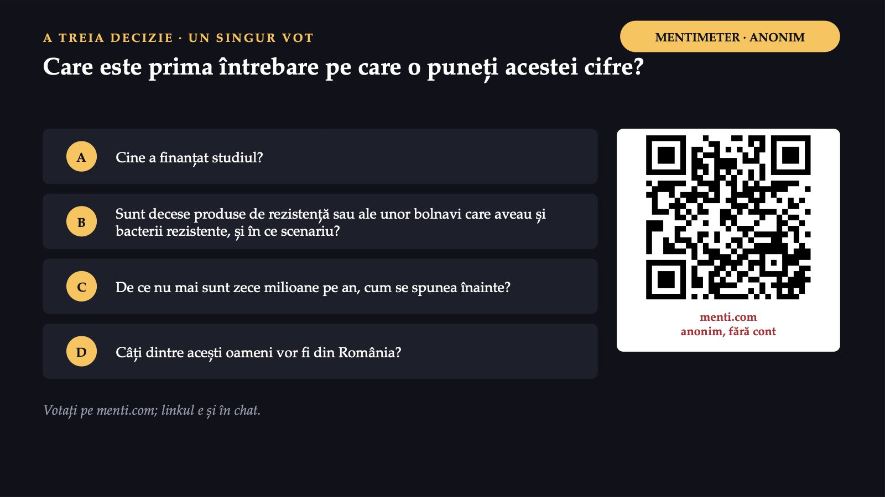
39 / 46A treia decizie, un singur vot pe Mentimeter, fără revot: care este prima întrebare pe care o puneți acestei cifre? Patru variante: cine a finanțat studiul; ce fel de deces și în ce scenariu; de ce nu mai sunt zece milioane pe an; câți dintre acești oameni vor fi din România. Alegeți întrebarea pe care ați pune-o întâi.
Răspunsul apare după ședință
Răspunsul apare după ședință
peste 50%
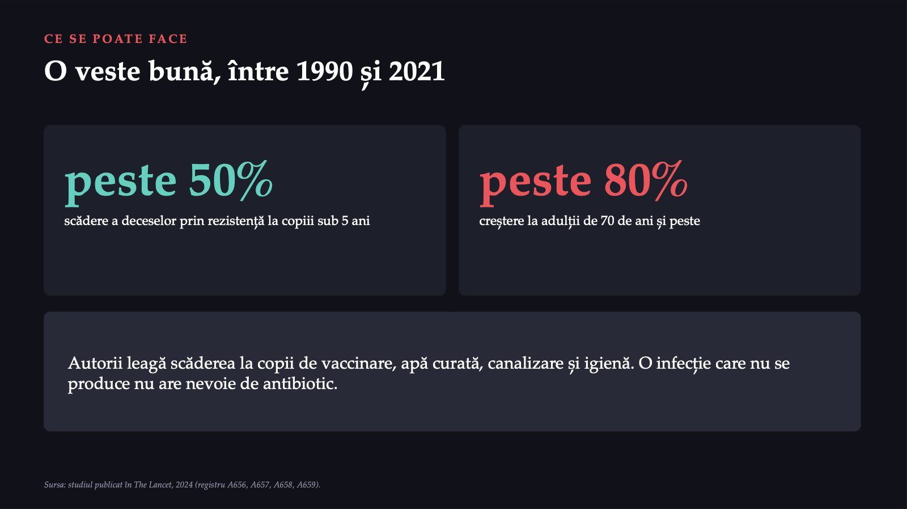
41 / 46Estimarea din 2024 conține și o veste bună, care vă privește direct. Între 1990 și 2021, decesele prin rezistență antimicrobiană au scăzut cu peste 50% la copiii sub 5 ani și au crescut cu peste 80% la adulții de 70 de ani și peste. Autorii leagă scăderea la copii de vaccinare și de accesul la apă curată, canalizare și igienă și scriu că prevenirea infecțiilor ar putea fi o intervenție foarte eficace împotriva rezistenței. Logica este simplă: o infecție care nu se produce nu are nevoie de antibiotic. Autorii scriu și că, fără eforturi suplimentare, ținta de a reduce cu 10% până în 2030 mortalitatea prin rezistență probabil nu va fi atinsă. Printre strategiile numite: vaccinuri noi, îngrijire mai bună, acces mai bun la antibiotice și folosirea lor chibzuită.
Răspunsul apare după ședință
Răspunsul apare după ședință
Credeți în continuare toate cele trei părți ale răspunsului?
43 / 46Revenim la votul de la începutul ședinței: credeți în continuare toate cele trei părți ale răspunsului provizoriu? Votați pe Mentimeter, anonim. Cine și-a schimbat părerea folosește reacția „mână ridicată” din Teams sau scrie în chat de ce. Nu căutăm o variantă bună; ne interesează ce v-a făcut să vă schimbați părerea.
Zece întrebări despre cifra de azi
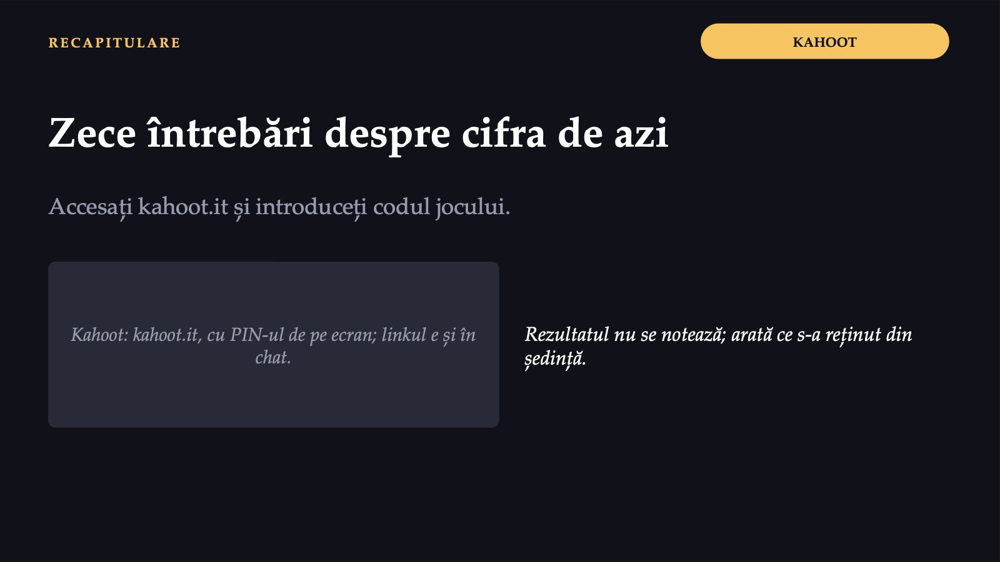
44 / 46Recapitulăm cu Kahoot: zece întrebări despre cifra de azi. Intrați pe kahoot.it cu codul jocului afișat pe ecran; linkul e și în chat. După fiecare întrebare discutăm pe scurt varianta bună și de ce este bună. Rezultatul nu se notează; ne arată ce s-a reținut din ședință.
Ce faceți diferit de mâine
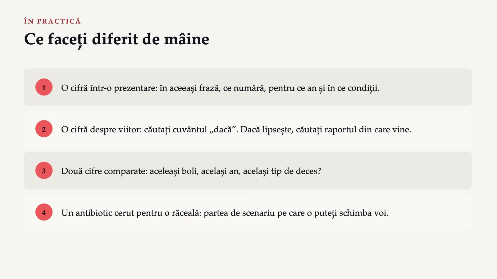
45 / 46Patru lucruri pe care le puteți face diferit de mâine, ca studenți și ca medici. Când puneți o cifră într-o prezentare, scrieți în aceeași frază ce numără, pentru ce an și în ce condiții. Când citiți o cifră despre viitor, căutați cuvântul „dacă”; dacă nu îl găsiți, căutați raportul din care vine. Când comparați două cifre, verificați întâi că numără același lucru: aceleași boli, același an, același tip de deces. Iar când un pacient vă cere antibiotic pentru o răceală, amintiți-vă că o infecție prevenită sau un antibiotic nefolosit fără rost este partea de scenariu pe care o puteți schimba voi.
Biletul de ieșire
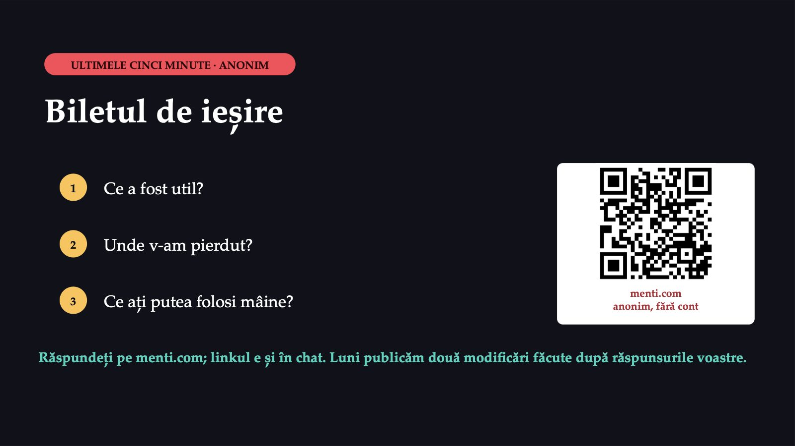
46 / 46Încheiem cu biletul de ieșire: trei întrebări anonime, pe Mentimeter; linkul e și în chat. Ce a fost util? Unde v-am pierdut? Ce ați putea folosi mâine? Luni publicăm pe pagina cursului două modificări făcute după răspunsurile voastre. Vă mulțumesc pentru atenție și pentru voturi.
Săgeți sau spațiu: navigare · O: vedere de ansamblu · N: notele prezentatorului · F: ecran complet · Esc: închidere